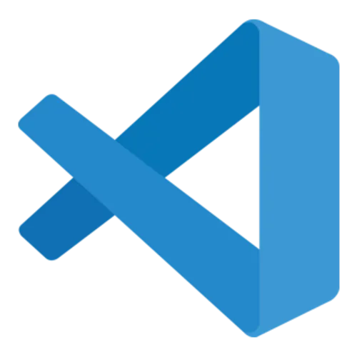
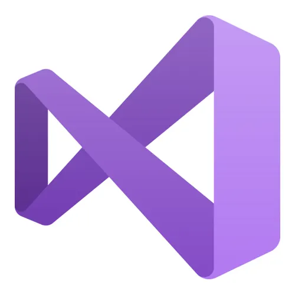
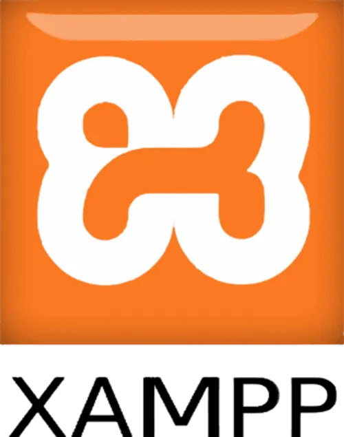
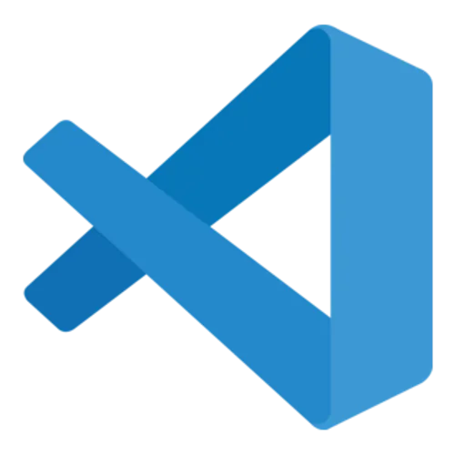
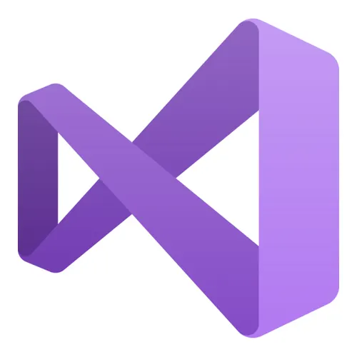
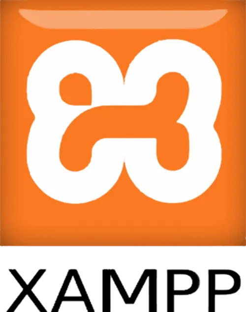

👨💻 Sobre mí
Soy Rubén Sánchez, ingeniero en sistemas recién egresado, apasionado por el desarrollo de software y la creación de soluciones tecnológicas que optimicen procesos dentro de las empresas.
Tengo experiencia desarrollando aplicaciones de escritorio con C# y MySQL, y actualmente estoy ampliando mis conocimientos en desarrollo web con HTML, CSS, JavaScript, React, y en control de versiones con Git y GitHub.
🎓 Formación académica
Universidad José Vasconcelos – San Luis Potosí
Formé parte de la generación 2020–2024, donde adquirí conocimientos en programación con C++, C#, Java, HTML, CSS y JavaScript; así como bases de datos SQL utilizando MySQL a través de XAMPP.
Como parte de mis residencias profesionales desarrollé un Sistema de Gestión de Inventarios (SGI) para la empresa Red de Energía e Infraestructura ROCA S.A. de C.V., empleando Windows Forms y C#.
📜 Acta de titulación🧠 Habilidades Técnicas
- Lenguajes de programación: C#, C++, Java, HTML, CSS, JavaScript.
- Desarrollo de aplicaciones de escritorio con Windows Forms (.NET).
- Gestión de bases de datos con MySQL (XAMPP).
- Control de versiones con Git y GitHub.
- Conocimientos básicos en React.
- Aprendizaje rápido de nuevas tecnologías.
- Aplicación de metodologías tradicionales de desarrollo de software, especialmente el modelo en cascada.

 





🧩 Experiencia y proyectos relevantes
-
Sistema de Gestión de Inventarios (SGI):
Desarrollé un sistema para registrar y controlar inventarios en la empresa ROCA S.A. de C.V.
Incluye control de accesos, generación de reportes, gestión de entradas y salidas y conexión a MySQL.
📄Ver proyecto completo→ - Portafolio web: Creación de mi portafolio profesional utilizando HTML, CSS y JavaScript, aplicando buenas prácticas de diseño y control de versiones con Git y GitHub.
- Proyectos personales: Lista de tareas, calculadora y ejercicios de programación para fortalecer mis habilidades en JavaScript y backend, aplicando Git en cada proyecto para mejorar mi flujo de trabajo.
💬 Objetivo profesional
Mi objetivo es seguir desarrollándome como programador y consolidarme como ingeniero, participando en proyectos que representen un reto real y que me permitan aportar soluciones eficientes.